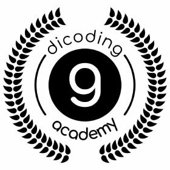
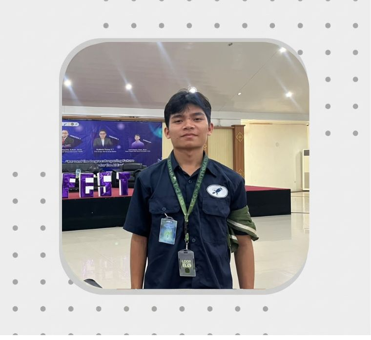

Halo, saya
Kornel Simanjuntak
Mahasiswa Informatika & Web Development
About Me
Hai, Saya Kornel Simanjuntak! Sebagai mahasiswa Teknik Informatika ITERA, hari-hari saya banyak dihabiskan untuk merancang antarmuka web dan menyelami dunia Artificial Intelligence (AI). Saya suka menggabungkan logika pemrograman dengan teknologi cerdas untuk menciptakan solusi digital yang solutif dan berdampak nyata.
Change your mind, and you'll change the world.

Projects
Beberapa proyek yang pernah saya kerjakan.
cat-photo-app
PublicFinal result of the 'Cat Photo App' workshop from the freeCodeCamp Responsive Web Design Certification. Learning how to build accessible and well-structured web applications.
HTML
CSS
☆ 1
portofolio pribadi
PublicWebsite portofolio pribadi yang menampilkan profil, rekam jejak akademik, sertifikasi teknis, serta kumpulan proyek pengembangan web.
HTML
CSS
☆ 0
Ruang Fokus
PublicPlatform web produktivitas dan ruang belajar virtual yang dirancang untuk membantu meningkatkan fokus, mengelola waktu belajar, serta memaksimalkan produktivitas harian.
HTML
CSS
JS
☆ 0
Experience
Pengalaman sejak tahun 2026.
Oktober 2026 – November 2026
Staff IT
Pemira ITERA
Mengelola, mengembangkan, dan mengamankan seluruh infrastruktur teknologi, sistem informasi, serta dukungan teknis guna memastikan kelancaran operasional dan tercapainya tujuan organisasi.
Agustus 2026 – Desember 2026
Asisten Praktikum
Institut Teknologi Sumatera
Membimbing mahasiswa TPB untuk menjalankan prosedur praktikum dengan tepat.
Agustus 2026 – Desember 2026
Asisten Tutorial
LTPB ITERA
Membimbing, mendampingi, dan mengevaluasi pemahaman mahasiswa baru terhadap materi mata kuliah dasar melalui sesi kelas tutorial dan penyelesaian soal latihan.
My Certificate
Dive into your future
Introduction to Data Science
⏱ 60 jam
Contact
Punya proyek atau ingin berkolaborasi? Kirim pesan saja.
My email